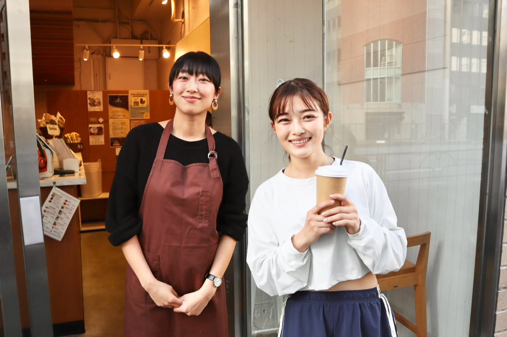

Mastercardのランニング企画「Mastercard GPS RUN」の11月コース「いぬRUN」を走った井上咲楽さんが、西新橋のCafe Pausa Treにお立ち寄りくださいました。
当店の看板ドリンク「フラッペ・バナネッソ」をお召し上がりいただきました。
井上さん、ご来店ありがとうございました。

井上さんとMastercard JapanのInstagramタイアップ投稿では、虎ノ門駅周辺の知らなかった道を走り、途中で当店に立ち寄る様子が紹介されています。ぜひご覧ください。
フラッペ・バナネッソは、バナナの甘みとエスプレッソの香りを楽しめる一杯です。
ご来店の際は、ぜひお試しください。

当店は「いぬRUN」に提携店舗として参加しています。
「いぬRUN」は、虎ノ門・新橋・芝を巡り、走った軌跡で地図に犬の形を描くコースです。
11月30日（月）まで、店頭でGPSランの走行記録画面とMastercardをご提示いただくと、フラッペ・バナネッソを無料でサイズアップできます（通常＋250円）。
走行途中の記録画面でもご利用いただけます。西新橋を通る際は、ひと息つきにお立ち寄りください。